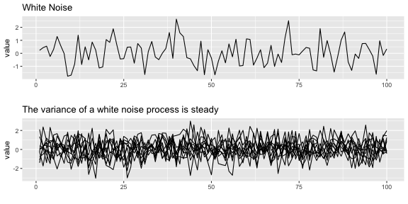
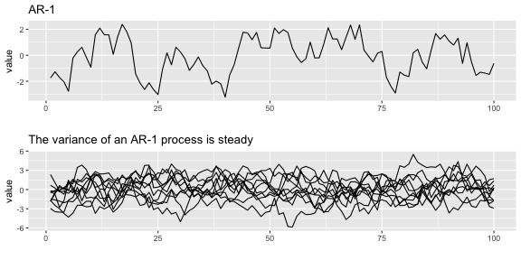
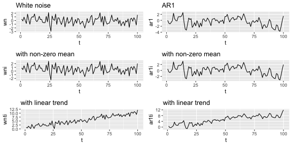
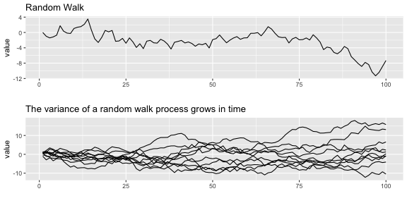
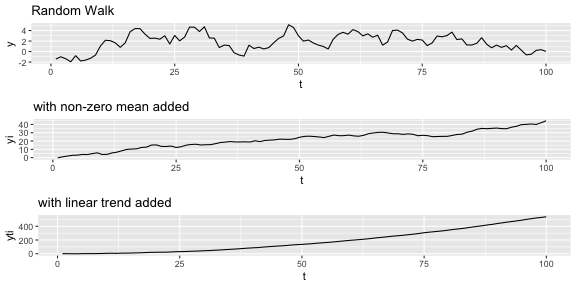
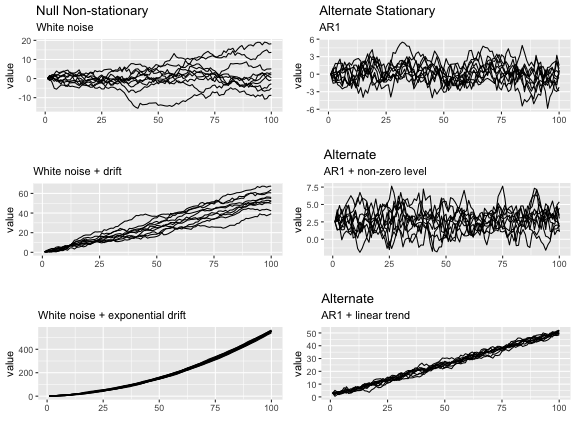

Load the data and packages
load("landings.RData")
landings$log.metric.tons = log(landings$metric.tons)
landings = subset(landings, Year <= 1989)
anchovy = subset(landings, Species=="Anchovy")$log.metric.tons
sardine = subset(landings, Species=="Sardine")$log.metric.tons
library(ggplot2)
library(gridExtra)
library(reshape2)
library(tseries)
library(urca)Stationarity
Box-Jenkins Method
A. Model form selection
- Evaluate stationarity and seasonality
- Selection of the differencing level (d)
- Selection of the AR level (p)
- Selection of the MA level (q)
B. Parameter estimation
C. Model checking
Stationarity
Stationarity means ‘not changing in time’ in the context of time-series models. Typically we test the trend and variance, however more generally all statistical properties of a time-series is time-constant if the time series is ‘stationary’.
Many ARMA models exhibit stationarity. White noise is one type: \[x_t = e_t, e_t \sim N(0,\sigma)\]

An AR-1 process with \(b<1\) \[x_t = b x_{t-1} + e_t\] is also stationary.

The processes shown have mean 0 and a flat level. We can also have stationarity around an non-zero level or stationarity around an linear trend. If \(b=0\), we have white noise and if \(b<1\) we have AR-1.
Non-zero mean: \(x_t = \mu + b x_{t-1} + e_t\)
Linear trend: \(x_t = \mu + at + b x_{t-1} + e_t\)

Non-stationarity
One of the most common forms of non-stationarity that is tested for is ‘unit root’, which means that the process is a random walk: \[x_t = x_{t-1} + e_t\] .

Similar to the way we added an intecept and linear trend to the stationarity processes, we can do the same to the random walk.
Non-zero mean or intercept: \(x_t = \mu + x_{t-1} + e_t\)
Linear trend: \(x_t = \mu + at + x_{t-1} + e_t\)
The effects are fundamentally different however. The addition of \(\mu\) leads to a upward mean linear trend while the addition of \(at\) leads to exponential growth.

Detecting stationarity
Why is evaluating stationarity important?
- Many AR models have a flat level or trend and time-constant variance. If your data do not have those properties, you are fitting a model that is fundamentally inconsistent with your data.
- Many standard algorithms for fitting ARIMA models assume stationarity. Note, you can fit ARIMA models without making this assumption, but you need to use the appropriate algorithm.
We will discuss three common approaches to evaluating stationarity:
- Visual test
- (Augmented) Dickey-Fuller test
- KPSS test
Visual test
The visual test is simply looking at a plot of the data versus time. Look for
- Change in the level over time. Is the time series increasing or decreasing? Does it appear to cycle?
- Change in the variance over time. Do deviations away from the mean change over time, increase or decrease?
Note, if you are using an augmented Dickey-Fuller test, you may inadvertantly invalidate your test by looking at the data.
Here is a plot of the anchovy and sardine in Greek waters from 1965 to 1989. The anchovies have an obvious non-stationary trend during this period. The mean level is going up. The sardines have a roughly stationary trend. The variance (deviations away from the mean) appear to be roughly stationary, neither increasing or decreasing in time.

Although the logged anchovy time series is increasing, it appears to have an linear trend.
Dickey-Fuller test
The Dickey=Fuller test (and Augmented Dickey-Fuller test) look for evidence that the time series has a unit root. The null hypothesis is that the time series has a unit root, that is, it has a random walk component. The alternative hypothesis is some variation of stationarity. The test has three main verisons.
Visually, the null and alternative hypotheses for the three Dickey-Fuller tests are the following. It is hard to see but in the panels on the left, the variance around the trend is increasing and on the right, it is not.

In math, here are the null and alternative hypotheses. In each, we are testing if \(\delta=0\).
- Null is a random walk with no drift \(x_t = x_{t-1}+e_t\)
Alternative is a mean-reverting (stationary) process with zero mean. \(x_t = \delta x_{t-1}+e_t\)
- Null is a random walk with drift (linear STOCHASTIC trend) \(x_t = \mu + x_{t-1} + e_t\)
Alternative is a mean-reverting (stationary) process with non-zero mean and no trend. \(x_t = \mu + \delta x_{t-1} + e_t\)
- Null is a random walk with exponential trend \(x_t = \mu + at + x_{t-1} + e_t\)
Alternative is a mean-reverting (stationary) process with non-zero mean and linear DETERMINISTIC trend. \(x_t = \mu + at + \delta x_{t-1} + e_t\)
Example: Dickey-Fuller tests on the anchovy time series
The urca R package can be used to apply the Dickey-Fuller tests. Use lags=0 for Dickey-Fuller which tests for AR-1 stationarity.
ur.df(y, type = c("none", "drift", "trend"), lags = 0)require(urca)
test = ur.df(anchovy, type="none", lags=0)
test##
## ###############################################################
## # Augmented Dickey-Fuller Test Unit Root / Cointegration Test #
## ###############################################################
##
## The value of the test statistic is: 0.8195ur.df() will report the test statistic. You can look up the values of the test statistic for different \(\alpha\) levels using summary(test) or attr(test, "cval"). If the test statistic is less than the critical value for \(\alpha\)=0.05 (‘5pct’ in cval), it means the null hypothesis of non-stationarity is rejected. For the Dickey-Fuller test, you do want to reject the null hypothesis.
The test statistic is
attr(test, "teststat")## tau1
## statistic 0.8195156and the critical value at \(\alpha = 0.05\) is
attr(test,"cval")[2]## [1] -1.95The statistic is larger than the critical value and thus the null hypothesis of non-stationarity is not rejected. That’s not what we want.
Augmented Dickey-Fuller test
The Dickey-Fuller test assumes that the stationary process is AR-1 (autoregressive lag-1). The Augmented Dickey-Fuller test allows a general stationary process. The idea of the test however is the same.
We can apply the Augmented Dickey-Fuller test with the ur.df() function or the adf.test() function in the tseries package.
adf.test(x, alternative = c("stationary", "explosive"),
k = trunc((length(x)-1)^(1/3)))The alternative is either stationary like \(x_t = \delta x_{t-1} + \eta_t\) with \(\delta<1\) or ‘explosive’ with \(b>1\). k is the number of lags which determines the number of time lags allowed in the autoregression. k is generally determined by the length of your time series.
Example: Augmented Dickey-Fuller tests with adf.test()
With the tseries package, we apply the Augmented Dickey-Fuller test with adf.test(). This function uses the test where the alternative model is stationary around a linear trend: \(x_t = \mu + at + \delta x_{t-1} + e_t\).
require(tseries)
adf.test(anchovy, alternative="stationary")##
## Augmented Dickey-Fuller Test
##
## data: anchovy
## Dickey-Fuller = -1.6851, Lag order = 2, p-value = 0.6923
## alternative hypothesis: stationaryIn both cases, we do not reject the null hypothesis that the data have a random walk. Thus there is not support for these time-series being stationary. alternative="stationary" is the default and the standard test.
Example: Augmented Dickey-Fuller tests with ur.df()
With the urca package, we apply the Augmented Dickey-Fuller test with ur.df(). The defaults for ur.df() are different than for adf.test(). ur.df() allow you to specify which of the 3 alternative hypotheses you want: none (stationary around 0), drift (stationary around a non-zero intercept), trend (stationary around a linear trend).
Another difference is that by default, ur.df() uses a fixed lag of 1 while by default adf.test() selects the lag based on the length of the time series.
We will specify “trend” to make the test similar to adf.test(). We will set the lags like adf.test() does also.
require(urca)
k = trunc((length(anchovy)-1)^(1/3))
test = ur.df(anchovy, type="trend", lags=k)
test##
## ###############################################################
## # Augmented Dickey-Fuller Test Unit Root / Cointegration Test #
## ###############################################################
##
## The value of the test statistic is: -1.6851 2.6616 1.421The test statistic values are the same, but we need to look up the critical values with summary(test).
KPSS test
In the Dickey-Fuller test, the null hypothesis is the unit root, i.e. random walk. Often times, there is not enough power to reject the null hypothesis. A null hypothesis is accepted unless there is strong evidence against it. The Kwiatkowski–Phillips–Schmidt–Shin (KPSS) test has as the null hypothesis that a time series is stationary around a level trend (or a linear trend). The alternative hypothesis for the KPSS test is a random walk.
The stationarity assumption is general; it does not assume a specific type of stationarity such as white noise.
If both KPSS and Dickey-Fuller tests support non-stationarity, then the stationarity assumption is not supported.
Example: KPSS tests
require(tseries)
kpss.test(anchovy, null="Trend")##
## KPSS Test for Trend Stationarity
##
## data: anchovy
## KPSS Trend = 0.1646, Truncation lag parameter = 1, p-value =
## 0.0345Here null="Trend" was included to account for the increasing trend in the data. The null hypothesis of stationarity is rejected. Thus both the KPSS and Dickey-Fuller tests support the hypothesis that the anchovy time series is non-stationary. That’s not what we want.
Differencing the data to make the mean stationary
Differencing means to create a new time series \(z_t = x_t - x_{t-1}\). First order differencing means you do this once (so \(z_t\)) and second order differencing means you do this twice (so \(z_t - z_{t-1}\)).
The diff() function takes the first difference:
par(mfrow=c(1,2))
plot(anchovy, type="l")
plot(diff(anchovy), type="l")
Let’s test the anchovy data with one difference using the KPSS test.
diff.anchovy = diff(anchovy)
kpss.test(diff.anchovy)## Warning in kpss.test(diff.anchovy): p-value greater than printed p-value##
## KPSS Test for Level Stationarity
##
## data: diff.anchovy
## KPSS Level = 0.061629, Truncation lag parameter = 1, p-value = 0.1The null hypothesis of stationairity is not rejected. That is good.
Let’s test the anchovy data with one difference using the Augmented Dickey-Fuller test. When we apply this test to differenced data, we need to use the model with no drift or intercept. That is type="none" in the ur.df() test.
test=ur.df(diff.anchovy, type="none", lags=2)
summary(test)##
## ###############################################
## # Augmented Dickey-Fuller Test Unit Root Test #
## ###############################################
##
## Test regression none
##
##
## Call:
## lm(formula = z.diff ~ z.lag.1 - 1 + z.diff.lag)
##
## Residuals:
## Min 1Q Median 3Q Max
## -0.31048 -0.06749 0.06824 0.20152 0.43470
##
## Coefficients:
## Estimate Std. Error t value Pr(>|t|)
## z.lag.1 -1.35641 0.49234 -2.755 0.0126 *
## z.diff.lag1 0.02323 0.37537 0.062 0.9513
## z.diff.lag2 -0.10682 0.22709 -0.470 0.6434
## ---
## Signif. codes: 0 '***' 0.001 '**' 0.01 '*' 0.05 '.' 0.1 ' ' 1
##
## Residual standard error: 0.2188 on 19 degrees of freedom
## Multiple R-squared: 0.6756, Adjusted R-squared: 0.6243
## F-statistic: 13.19 on 3 and 19 DF, p-value: 6.887e-05
##
##
## Value of test-statistic is: -2.755
##
## Critical values for test statistics:
## 1pct 5pct 10pct
## tau1 -2.66 -1.95 -1.6The null hypothesis of NON-stationairity IS rejected. That is good.
Summary
Look at your data before you fit a mode.
- Visual test: is the time series flutuating about a level or a linear trend?
Yes or maybe? Apply a “unit root” test.
- (Augmented) Dickey-Fuller test
- KPSS test
No or fails the unit root test.
- Apply differencing again and re-test.
Still not passing?
- Try a second difference.
Still not passing?
- ARMA model might not be the best choice.
Note: another common approach is detrending with a TV regression with seasonality (if needed).
Problems
We will address these later.
Missing data points
Seasonality